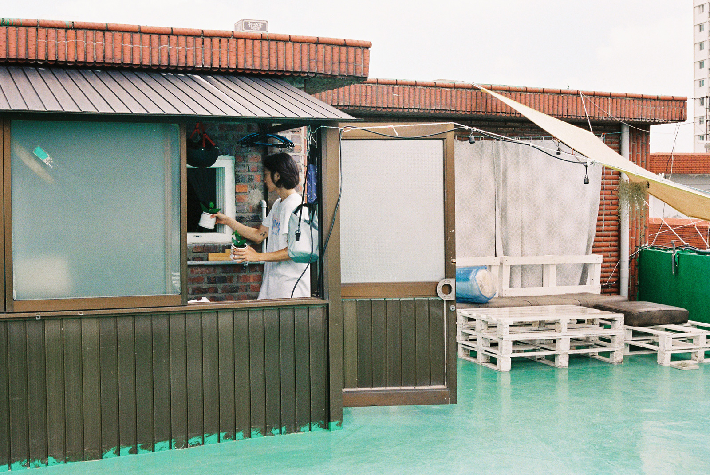

Back

위메프패션
위메프에 전문화된 패션 서비스가 필요. 매력적인 패션 상품을 한 곳에서 탐색할 수 있는 공간이 부족. 패션 디자인 담당으로 주도적으로 패션 서비스 UI를 변경 제안. 기존 여러개의 상품이 합쳐져 상품을 탐색하기 어려웠던 구조인 위메프 패션 서비스
- Web Mobile
- Interaction Design, UI,UX Design (기여 100%)
- Sketch, Protopie, Zeplin
next